산업안전기사 (2010-05-09 기출문제)
1과목: 안전관리론
1. 다음 중 리더십의 유형 분류로 볼 수 없는 것은?
- 권위형
- 민주형
- 자유방임형
- 갈등해소형
(정답률: 77%)

2. 연간근로자수가 1000명인 A 공장의 도수율이 10 이었다면 이 공장에서 연간 발생한 재해건수는 몇 건인가?
- 20건
- 22건
- 24건
- 26건
(정답률: 75%)
3. 다음 중 레윈(Lewin.K)에 의하여 제시된 인간의 행동에 관한 식을 올바르게 표현한 것은? (단, B는 인간의 행동, P는 개체, E는 환경, f는 함수관계를 의미한다.)
- B = f(P⋅E)
- B = f(P+1)B
- P = E⋅f(B)
- E = f(P⋅B)
(정답률: 90%)
4. 다음 중 무재해(Zero accident)운동의 기본 이념을 설명한 내용으로 적절하지 않은 것은?
- 무의 원칙으로 불휴재해는 물론 사업장 내의 잠재위험 요인을 사전에 파악하여 뿌리에서부터 재해를 없앤다.
- 무결점의 원칙은 작업장내의 결점이나 결함이 하나도 없는 완전한 상태로 만들자는 것이다.
- 참가의 원칙은 위험을 제거하기 위해 전원이 참가, 협력하여 의욕적으로 문제해결을 실천하는 것이다.
- 선취의 원칙은 위험요인을 행동하기 전에 예지하여 발견, 예방하는 것이다.
(정답률: 78%)
5. 다음 중 주의의 특성에 관한 설명으로 적절하지 않은 것은?
- 한 지점에 주의를 집중하면 다른 곳에의 주의는 약해진다.
- 장시간 주의를 집중하려 해도 주기적으로 부주의의 리듬이 존재한다.
- 의식이 과잉상태인 경우 최고의 주의집중이 가능해 진다.
- 여러 자극을 지각할 때 소수의 현란한 자극에 선택적 주의를 기울이는 경향이 있다.
(정답률: 88%)
6. 다음 중 안전⋅보건교육의 단계를 순서대로 나타낸 것은?
- 안전 태도교육 → 안전 지식교육 → 안전 기능교육
- 안전 지식교육 → 안전 기능교육 → 안전 태도교육
- 안전 기능교육 → 안전 지식교육 → 안전 태도교육
- 안전 자세교육 → 안전 지식교육 → 안전 기능교육
(정답률: 77%)
7. 다음 중 재해조사시 유의사항에 관한 설명으로 틀린 것은?
- 사실을 있는 그대로 수집한다.
- 조사는 2인 이상이 실시한다.
- 기계설비에 관한 재해요인만 직접적으로 도출한다.
- 목격자의 증언 등 사실 이외의 추측의 말은 참고로만 한다.
(정답률: 86%)
8. 재해분석도구 가운데 재해발생의 유형을 어골상으로 분류하여 분석하는 것은?
- 파레토도
- 특성요인도
- 관리도
- 클로즈분석
(정답률: 72%)
9. 다음 중 산업안전보건법상 안전관리자의 업무가 아닌 것은?
- 사업장 순회점검⋅지도 및 조치의 건의
- 해당 사업장 안전교육계획의 수립 및 안전교육 실시에 관한 보좌 및 조언ㆍ지도
- 산업재해 발생의 원인 조사ㆍ분석 및 재발 방지를 위한 기술적 보좌 및 조언ㆍ지도
- 해당 작업의 작업장 정리⋅정돈 및 통로 확보에 대한 확인⋅감독
(정답률: 74%)
10. 다음 중 적성배치에 있어서 고려되어야 할 기본 사항에 해당되지 않는 것은?
- 적성 검사를 실시하여 개인의 능력을 파악한다.
- 직무 평가를 통하여 자격수준을 정한다.
- 인사권자의 주관적인 감정요소에 따른다.
- 인사관리의 기준 원칙을 준수한다.
(정답률: 87%)
11. 다음 중 산업안전보건법상 사업 내 안전⋅보건교육에 있어 관리감독자 정기안전⋅보건교육의 교육내용이 아닌 것은?
- 작업 개시 전 점검에 관한 사항
- 유해⋅위험 작업환경 관리에 관한 사항
- 표준안전작업방법 및 지도 요령에 관한 사항
- 작업공정의 유해⋅위험과 재해 예방대책에 관한 사항
(정답률: 64%)
12. 다음 [그림]과 같은 안전관리 조직의 특징으로 잘못된 것은?
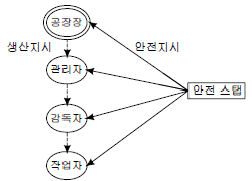
- 1000명 이상의 대규모 사업장에 적합하다.
- 생산부분은 안전에 대한 책임과 권한이 없다.
- 사업장의 특수성에 적합한 기술연구를 전문적으로 할 수 있다.
- 권한다툼이나 조정 때문에 통제수속이 복잡해지며 시간과 노력이 소모된다.
(정답률: 67%)
13. 의무안전인증 대상 보호구 중 AE, ABE종 안전모의 질량 증가율은 몇 % 미만이어야 하는가?
- 1%
- 2%
- 3%
- 5%
(정답률: 78%)
14. 다음 중 강의식 교육방법의 장점으로 볼 수 없는 것은?
- 집단으로서의 결속력, 팀워크의 기반이 생긴다.
- 타 교육에 비하여 교육시간의 조절이 용이하다.
- 다수의 인원을 대상으로 단시간 동안 교육이 가능하다.
- 새로운 것을 체계적으로 교육할 수 있다.
(정답률: 57%)
15. 산업안전보건법상 안전⋅보건표지에 있어 경고표지의 종류 중 기본모형이 다른 것은?
- 매달린물체경고
- 폭발성물질경고
- 고압전기경고
- 방사성물질경고
(정답률: 66%)
16. 아담스(Edward Adams)의 사고연쇄반응이론 5단계에서 불안전행동 및 불안전상태는 어느 단계에 해당되는가?
- 제1단계 : 관리구조
- 제2단계 : 작전적 에러
- 제3단계 : 전술적 에러
- 제4단계 : 사고
(정답률: 59%)
17. 다음 중 학습경험선정의 원리에 해당하는 것은?
- 계속성의 원리
- 통합성의 원리
- 다양성의 원리
- 동기유발의 원리
(정답률: 48%)
18. 다음 중 Off Job Training에 관한 설명으로 옳은 것은?
- 개개인에게 적절한 지도훈련이 가능하다.
- 훈련에 필요한 업무의 계속성이 끊어지지 않는다.
- 각 직장의 근로자가 지식이나 경험을 교류할 수 있다.
- 직장의 실정에 맞게 실제적 훈련이 가능하다.
(정답률: 69%)
19. 위험예지훈련을 실시할 때 현상 파악이나 대책수립단계에서 시행하는 BS(Brainstorming) 원칙에 어긋나는 것은?
- 자유롭게 본인의 아이디어를 제시한다.
- 타인의 아이디어에 대하여 평가하지 않는다.
- 사소한 아이디어라도 가능한 한 많이 제시하도록 한다.
- 기존 또는 타인의 아이디어를 변형하여 제시하지 않는다.
(정답률: 87%)
20. 다음 중 산업안전보건법상 안전검사 대상 유해⋅위험 기계에 해당하지 않는 것은?
- 프레스
- 압력용기
- 곤돌라
- 지게차
(정답률: 63%)
2과목: 인간공학 및 시스템안전공학
21. 인간과 기계(환경) 계면에서의 인간과 기계와의 조화성 3가지 차원에서 고려되는데 이에 해당하지 않는 것은?
- 신체적 조화성
- 지적 조화성
- 감성적 조화성
- 감각적 조화성
(정답률: 43%)
22. FMEA의 표준적 실시절차를 다음과 같이 3가지로 구분 하였을 때 “대상 시스템의 분석”에 해당되는 것은?
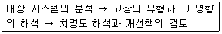
- 치명도 해석
- 고장등급의 평가
- 고장형의 예측과 설정
- 기능 블록과 신뢰성 블록의 작성
(정답률: 50%)
23. 디시전 트리(Decision Tree)를 재해석하고 분석에 이용한 경우의 분석법이며, 설비의 설계 단계에서부터 사용단계 까지의 각 단계에서 위험을 분석하는 귀납적 정량적 분석 방법은?
- ETA
- FMEA
- THERP
- CA
(정답률: 51%)
24. 다음 시스템에 대하여 톱사상(Top Event)에 도달할 수 있는 최소 컷셋(Minimal Cut Set)을 구할 때 다음 중 올바른 집합은? (단, ①, ②, ③, ④는 각 부품의 고장확률을 의미하며 집합 {1,2}는 ①번 부품과 ②번 부품이 동시에 고장 나는 경우를 의미한다.)
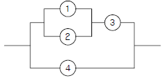
- {1,2}, {3,4}
- {1,3}, {2,4}
- {1,3,4}, {2,3,4}
- {1,2,4}, {3,4}
(정답률: 53%)
25. 다음 중 상황해석을 잘못하거나 틀린 목표를 착각하여 행하는 인간의 실수는?
- 착오(Mistake)
- 실수(Slip)
- 건망증(Lapse)
- 위반(Violation)
(정답률: 78%)
26. 습구온도가 20℃, 건구온도가 30℃ 일 때 Oxford지수는 얼마인가?
- 21.5
- 22.5
- 25.0
- 28.5
(정답률: 56%)
27. 각 부품의 신뢰도가 다음과 같을 때 시스템의 전체 신뢰도는 약 얼마인가?
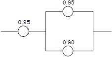
- 0.8123
- 0.9453
- 0.9553
- 0.9953
(정답률: 69%)
28. 다음과 같은 실내 표면에서 일반적으로 추천반사율의 크기를 올바르게 나열한 것은?
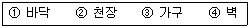
- ① < ③ < ④ < ②
- ① < ④ < ③ < ②
- ④ < ① < ② < ③
- ④ < ② < ① < ③
(정답률: 75%)
29. 다음 중 FTA에서 사용되는 minimal cut set에 대한 설명으로 틀린 것은?
- 사고에 대한 시스템의 약점을 표현한다.
- 정상사상(Top 사상)을 일으키는 최소한의 집합이다.
- 시스템에 고장이 발생하지 않도록 하는 사상의 집합이다.
- 일반적으로 Fussell Algorithm을 이용한다.
(정답률: 64%)
30. 다음 중 인체에서 뼈의 주요 기능으로 볼 수 없는 것은?
- 인체의 지주
- 장기의 보호
- 골수의 조혈기능
- 영양소의 대사작용
(정답률: 81%)
31. 안전⋅보건표지에서 경고표지는 삼각형, 안내표지는 사각형, 지시표지는 원형 등으로 부호가 고안되어 있다. 이처럼 부호가 이미 고안되어 이를 사용자가 배워야 하는 부호를 무엇이라 하는가?
- 묘사적 부호
- 추상적 부호
- 임의적 부호
- 사실적 부호
(정답률: 72%)
32. 정보를 전송하기 위하여 표시장치를 선택할 때 시각장치보다 청각장치를 사용하는 것이 더 좋은 경우는?
- 메시지가 즉각적인 행동을 요구하는 경우
- 메시지가 공간적인 위치를 다루는 경우
- 메시지가 이후에 다시 참조되는 경우
- 직무상 수신자가 한 곳에 머무르는 경우
(정답률: 81%)
33. 다음 중 인간-기계 통합 체계의 인간 또는 기계에 의해서 수행되는 기본기능의 유형에 해당하지 않는 것은?
- 감지
- 정보 보관
- 궤환
- 행동
(정답률: 76%)
34. 다음 중 동작경제의 원칙과 가장 거리가 먼 것은?
- 두 팔의 동작은 동시에 같은 방향으로 움직일 것
- 두 손의 동작은 같이 시작하고 같이 끝나도록 할 것
- 급작스런 방향의 전환은 피하도록 할 것
- 가능한 한 관성을 이용하여 작업하도록 할 것
(정답률: 68%)
35. 다음 중 FTA(Fault Tree Analysis)에 관한 설명으로 가장 적절한 것은?
- 복잡하고 대형화된 시스템의 신뢰성 분석에는 적절하지 않다.
- 시스템 각 구성요소의 기능을 정상인가 또는 고장인가로 점진적으로 구분 짓는다.
- “그것이 발생하기 위해서는 무엇이 필요한가?“ 라는 것은 연역적이다.
- 사건들을 일련의 이분(binary) 의사 결정 분기들로 모형화 한다.
(정답률: 63%)
36. 작업만족도(job satisfaction)는 작업설계(job design)를 함에 있어 철학적으로 고려해야 할 사항이다. 다음 중 작업 만족도를 얻기 위한 수단으로 볼 수 없는 것은?
- 작업확대(job enlargement)
- 작업윤택화(job enrichment)
- 작업감소(job reduce)
- 작업순환(job rotation)
(정답률: 53%)
37. 다음 중 고장률이 인 n개의 구성부품이 병렬로 연결된 시스템의 평균수명(MTBFs)을 구하는 식으로 옳은 것은? (단, 각 부품의 고장밀도함수는 지수분포를 따른다.)
- MTBFs = λn
- MTBFs = nλ
- MTBFs = 1/λ+1/2λ+.....+1/nλ
- MTBFs = 1/λ×1/2λ×.....×1/nλ
(정답률: 78%)
38. 동전 1개를 3번 던질 때 뒷면이 2개만 나오는 경우를 자극정보라 한다면 이 때 얻을 수 있는 정보량은 약 몇 bit인가?
- 1.13
- 1.33
- 1.53
- 1.73
(정답률: 28%)
39. 다음 중 안전성 평가의 기본원칙 6단계에 해당되지 않는 것은?
- 관계 자료의 정비검토
- 정성적 평가
- 작업 조건의 평가
- 안전대책
(정답률: 65%)
40. 운용상의 시스템안전에서 검토 및 분석해야 할 사항으로 틀린 것은?
- 사고조사에의 참여
- 고객에 의한 최종 성능검사
- ECR(Error Cause Removal) 제안 제도
- 시스템의 보수 및 폐기
(정답률: 35%)
3과목: 기계위험방지기술
41. 롤러기의 방호장치 설치 시 유의해야 할 사항으로 거리가 먼 것은?
- 손으로 조작하는 급정지장치의 조작부는 롤러기의 전면 및 후면에 각각 1개씩 수평으로 설치하여야 한다.
- 앞면 롤러의 표면속도가 30m/min 미만인 경우 급정지 거리는 앞면 롤러 원주의 1/2.5 이하로 한다.
- 작업자의 복부로 조작하는 급정지장치는 높이가 밑면에서 0.8m 이상 1.1m 이내에 설치되어야 한다.
- 급정지장치의 조작부에 사용하는 줄은 사용 중 늘어져서는 안되며 충분한 인장강도를 가져야 한다.
(정답률: 75%)
42. 슬라이드가 내려옴에 따라 손을 쳐내는 막대가 좌우로 왕복하면서 위험점으로부터 손을 보호하여 주는 프레스의 안전장치는?
- 손쳐내기식 방호장치
- 수인식 방호장치
- 게이트 가드식 방호장치
- 양손조작식 방호장치
(정답률: 80%)
43. 다음 중 방호장치와 위험기계⋅기구의 연결이 잘못된 것은?
- 날 접촉예방장치 - 프레스
- 반발예방기구 - 목재가공용 둥근톱
- 덮개 - 띠톱
- 칩브레이커 -선반
(정답률: 62%)
44. 다음 중 압력용기의 식별이 가능하도록 하기 위하여 그 압력용기에 대하여 지워지지 아니하도록 각인 표시를 해야하는 사항으로 가장 알맞은 것은?
- 압력 용기의 최고 사용압력, 제조연월일, 보관온도
- 압력 용기의 최고 사용압력, 제조연월일, 제조회사명
- 압력 용기의 최고 사용압력, 제조연월일, 사용방법
- 압력 용기의 저장 온도, 명칭, 제조회사명
(정답률: 64%)
45. 안전계수가 5인 체인의 최대설계하중이 120kgf이라면 이 체인의 극한하중은 얼마인가?
- 24kgf
- 120kgf
- 600kgf
- 1200kgf
(정답률: 70%)
46. 광전자식 방호장치를 설치한 프레스에서 광선을 차단한 후 0.3초 후에 슬라이드가 정지하였다. 이 때 방호장치의 안전거리는 최소 몇 mm 이상이어야 하는가?
- 180
- 280
- 380
- 480
(정답률: 55%)
47. 드릴링 머신에서 드릴 회전수가 1000rpm이고, 드릴 지름이 20mm 일 때 원주 속도는 약 얼마인가?
- 62.8m/min
- 31.4m/min
- 3.14m/min
- 6.28m/min
(정답률: 66%)
48. 둥근 톱기계의 방호장치 중 반발 예방장치의 종류가 아닌 것은?
- 분할날
- 반발방지 기구(finger)
- 보조안내판
- 안전덮개
(정답률: 35%)
49. 기계설비 방호장치의 분류에서 위험장소에 대한 방호장치에 해당되지 않는 것은?
- 격리형 방호장치
- 포집형 방호장치
- 접근거부형 방호장치
- 위치제한형 방호장치
(정답률: 71%)
50. 지름이 5cm 이상을 갖는 회전중인 연삭숫돌의 파괴에 대비하여 필요한 방호장치는?
- 받침대
- 플랜지
- 덮개
- 프레임
(정답률: 73%)
51. 보일러의 폭발사고 예방을 위한 장치가 아닌 것은?
- 압력방출장지
- 압력제한스위치
- 언로드밸브
- 고저수위조절장치
(정답률: 74%)
52. 재료에 대한 시험 중 비파괴시험이 아닌 것은?
- 방사선투과시험
- 자분탐상시험
- 초음파탐상시험
- 피로시험
(정답률: 79%)
53. 무부하 상태에서 지게차 주행 시의 좌우 안정도 기준은? (단, V는 구내최고속도[km/h]이다.)
- (15+1.1×V)% 이내
- (15+1.5×V)% 이내
- (20+1.1×V)% 이내
- (20+1.5×V)% 이내
(정답률: 76%)
54. 두께 1mm이고 치진폭이 1.3mm인 목재가공용 둥근톱에서 반발예방장치 분할날의 두께(t)로 적절한 것은?
- 1.1≦ t <1.3
- 1.3≦ t <1.5
- 0.9≦ t <1.1
- 1.5≦ t <1.7
(정답률: 71%)
55. 가스용접에서 산소아세틸렌 불꽃이 순간적으로 팁 끝에 흡인되고 “빵빵” 하면서 꺼졌다가 다시 켜졌다가 하는 현상을 무엇이라 하는가?
- 역화(back fire)
- 인화(flash back)
- 역류(contra flow)
- 점화(ignition)
(정답률: 69%)
56. 로봇의 작동범위 내에서 그 로봇에 관하여 교시 등의 작업을 하는 때에 작업시작 전 점검사항이 아닌 것은? (단, 기타 연결부위의 이상유무는 제외한다.)
- 제동장치 기능의 이상유무
- 외부전선의 피복 손상유무
- 매니퓰레이터 작동의 이상유무
- 권과방지장치 기능의 이상유무
(정답률: 72%)
57. 다음 중 지게차를 이용한 작업을 안전하게 수행하기 위한 장치와 가장 거리가 먼 것은?
- 헤드 가드
- 전조등 및 후미등
- 훅 및 샤클
- 백레스트
(정답률: 73%)
58. 선반의 방호장치 중 적당하지 않은 것은?
- 슬라이딩(sliding)
- 실드(shield)
- 척커버(chuck cover)
- 칩 브레이커(chip breaker)
(정답률: 66%)
59. 프레스의 금형조정 작업 시 위험한계 내에서 작업하는 작업자의 안전을 위하여 안전블록의 사용 등 필요한 조치를 취해야 한다. 다음 중 이에 해당하는 조정작업으로 옳은 것은?
- 금형의 부착작업 및 해체작업
- 금형의 설계 및 부착작업
- 금형의 설계 및 수리작업
- 금형 설계의 지휘작업
(정답률: 67%)
60. 용접장치에서 안전기의 설치기준에 관한 설명으로 틀린 것은?
- 아세틸렌 용접장치에 대하여는 그 취관마다 안전기를 설치해야 한다.
- 아세틸렌 용접장치의 안전기는 가스용기와 발생기가 분리되어 있는 경우 발생기와 가스용기 사이에 설치한다.
- 가스집합 용접장치의 안전기는 주관 및 분기관에 안전기를 설치하며, 이 경우 하나의 취관에 2개 이상의 안전기를 설치한다.
- 가스집합 용접장치의 안전기 설치는 화기사용설비로 부터 3m 이상 격리 설치한다.
(정답률: 62%)
4과목: 전기위험방지기술
61. 피뢰기의 제한 전압이 752kV이고 변압기의 기준 충격절연 강도기 1⑤0kV이라면, 보호여유도는 약 [%]인가?
- 18%
- 30%
- 40%
- 43%
(정답률: 56%)
62. 방폭구조 전기기계기구에 관련된 기호의 의미가 서로 맞지 않는 것은?
- n : 비점화성방폭구조
- p : 내압방폭구조
- o : 유입방폭구조
- e : 안전증방폭구조
(정답률: 61%)
63. 누전차단기의 설치 장소로 알맞지 않는 곳은?
- 주위 온도는 -10~40(℃) 범위 내에 설치
- 표고 1,000(m) 이상의 장소에 설치
- 상대습도가 45~80(%) 사이의 장소에 설치
- 전원전압이 정격전압의 85~110(%) 사이에서 사용
(정답률: 54%)
64. 다음 폭발성 가스 중에 발화도 G1에 해당하는 것은?
- 아세톤
- 아세트
- 에틸
- 에탄올
(정답률: 51%)
65. 금속제 외함을 가진 저압의 기계⋅기구는 전로에 지락이 생긴 경우 사용전압 몇[V] 를 넘는 경우에 자동적으로 전로를 차단하는 장치를 시설하도록 규정하고 있는가?
- 30V
- 60V
- 90V
- 150V
(정답률: 31%)
66. 가로등의 접지전극을 지면으로부터 75cm 이상 깊은 곳에 매설하는 주된 이유는?
- 전극의 부식을 방지하기 위하여
- 접지전선의 단선을 방지하기 위하여
- 접촉 전압을 감소시키기 위하여
- 접지 저항을 증가시키기 위하여
(정답률: 56%)
67. 심실세동 전류를
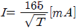
라면 감전되었을 경우 심실세동시에 인체에 직접 받는 전기에너지는 약 몇[cal]인가? (단, T는 통전시간으로 1초이며, 인체의 저항은 500Ω으로 한다.)- 0.52
- 1.35
- 2.14
- 3.26
(정답률: 37%)
68. 전기기기를 인화성 가스에 의한 폭발위험장소에서 사용할 때 1종 장소에 해당하는 폭발위험장소는?
- 호퍼(hooper)내부
- 벤트(vent)주위
- 개스킷(gasket)주위
- 패킹(packing)주위
(정답률: 44%)
69. 220V 전압에 접촉된 사람의 인체저항이 약 1000Ω일 때 인체 전류와 그 결과치의 위험성 여부로 알맞은 것은?
- 10mA, 안전
- 45mA, 위험
- 50mA, 안전
- 220mA, 위험
(정답률: 67%)
70. 보호구 의무안전인증에서 내전압용 절연장갑의 신장율은 몇 % 이상 이어야 하는가?
- 400%
- 500%
- 600%
- 700%
(정답률: 45%)
71. 코로나 방전이 발생할 경우 공기 중에 생성되는 것은?
- O2
- O3
- N2
- N3
(정답률: 77%)
72. 절연화가 진행되어 누설전류가 증가하면서 발생되는 결과와 거리가 먼 것은?
- 감전사고
- 누전화재
- 정전기 증가
- 아크 지락에 의한 기기의 손상
(정답률: 66%)
73. 온도조절용 바이메탈과 온도 퓨즈가 회로에 조합되어 있는 다리미를 사용한 가정에서 화재가 발생했다. 다리미에 부착되어 있던 바이메탈과 온도퓨즈를 대상으로 화재사고를 분석하려 하는데 논리기호를 사용하여 표현 하고자 한다. 어느 기호가 적당하겠는가? (단, 바이메탈의 작동과 온도 퓨즈가 끊어졌을 경우를 0, 그렇지 않을 경우를 1 이라 한다.)
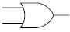
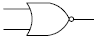
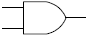
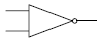
(정답률: 61%)
74. 다음 중 고압활선 작업시 감전의 위험이 발생할 우려가 있는 때의 조치사항에 포함되지 않는 것은?
- 접근 한계거리 유지
- 절연용 보호구 착용
- 활선작업용 기구 사용
- 절연용 방호구 설치
(정답률: 33%)
75. 제전기의 제전효과에 영향을 미치는 요인으로 볼 수 없는 것은?
- 제전기의 이온 생성능력
- 제전기의 설치위치 및 설치각도
- 대전 물체의 대전전위 및 대전분포
- 전원의 극성 및 전선의 길이
(정답률: 62%)
76. 폭발성 가스가 있는 위험장소에서 사용할 수 있는 전기 설비의 방폭구조로서 내부에서 폭발하더라도 틈의 냉각효과로 인하여 외부의 폭발성 가스에 착화될 우려가 없는 방폭구조는?
- 내압방폭구조
- 유입방폭구조
- 안전증방폭구조
- 본질안전방폭구조
(정답률: 74%)
77. 전력설비의 하나로 변류기는 대전류를 이에 비례하는 전류로 변환하여 계기에 공급한다. 사용 중 2차를 절대로 개방해서는 안 되는 이유는?
- 2차측에 이상고전압이 유기되어 계전기코일의 절연이 파괴된다.
- 1차측에 이상고전압이 유기되어 계전기코일의 절연이 파괴된다.
- 1차, 2차 코일이 혼촉되는 고장이 발생한다.
- 2차측에 연결된 계기가 철심의 과포화로 파괴된다.
(정답률: 45%)
78. 3상 전동기의 부하에 흐르는 각 선전류를 각각 I1, I2, I3라 할 때 영상변류기의 2차측에 전압이 유도되는 경우는? (단, Ig는 지락전류 이다.)
- I1 + I2 + I3 = 0
- I1 + I2 = 0
- I1 + I2 + I3 = Ig
- I2 + I3 = 0
(정답률: 62%)
79. 다음 중 방폭전기설비의 선정시 유의사항이 아닌 것은
- 전기기기의 종류
- 전기배선 방법
- 방폭구조의 종류
- 접지공사의 종류
(정답률: 45%)
80. 정전용량 C=20[F], 방전시 전압 V=2[kV]일 때 정전 에너지[J]는 얼마인가?
- 40
- 80
- 400
- 800
(정답률: 62%)
5과목: 화학설비위험방지기술
81. 물 소화약제의 단점을 보완하기 위하여 물에 탄산칼륨(K2CO3) 등을 녹인 수용액으로 부동성이 높은 알칼리성 소화약제는?
- 포 소화약제
- 분말 소화약제
- 강화액 소화약제
- CO2 소화약제
(정답률: 67%)
82. 공기 중에서 아세틸렌의 폭발하한계는 2.2vol% 이다. 이 경우 표준상태에서 아세틸렌과 공기의 혼합기체 1m3에 함유되어 있는 아세틸렌의 양은 약 몇 g인가? (단, 아세틸렌의 분자량은 26이다.)
- 19.02
- 25.54
- 29.02
- 35.54
(정답률: 48%)
83. 다음 설명이 의미하는 것은?
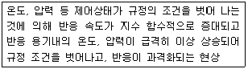
- 비등
- 과열⋅과압
- 폭발
- 반응폭주
(정답률: 75%)
84. 다음 중 마그네슘의 저장 및 취급에 관한 설명으로 틀린 것은?
- 화기를 엄금하고, 가열, 충격, 마찰을 피한다.
- 분말이 비산하지 않도록 완전 밀봉하여 저장한다.
- 1류 또는 6류와 같은 산화제와 혼합되지 않도록 격리 저장한다.
- 일단 연소하면 소화가 곤란하지만 초기 소화 또는 소규모 화재시 물, CO2소화설비를 이용하여 소화한다.
(정답률: 78%)
85. 위험물 저장탱크에 방유제를 설치하는 구조 및 방법으로 틀린 것은?
- 외부에서 방유제 내부를 볼 수 있는 구조로 설치한다.
- 방유제 내면과 저장탱크 외면의 사이는 0.5m 이상을 유지하여야 한다.
- 방유제 내면 및 방유제 내면 바닥의 재질은 위험 물질에 대하여 내식성이 있어야 한다.
- 방유제를 관통하는 배관과 슬리브 배관 사이에는 충전물을 삽입하여 완전 밀폐하여야 한다.
(정답률: 57%)
86. 압축기의 운전 중 흡입배기 밸브의 불량으로 인한 주요 현상으로 볼 수 없는 것은?
- 가스온도가 상승한다.
- 가스압력에 변화가 초래된다.
- 밸브 작동음에 이상을 초래한다.
- 피스톤링의 마모와 파손이 발생한다.
(정답률: 60%)
87. 다음 중 고온기류에 의한 발화에 대하여 설명한 것으로 틀린 것은?
- 기류의 온도가 높을수록 발화에 도달하는 시간은 짧다.
- 기체 유속의 영향은 유속이 빨라지면 발화한계온도는 낮아진다.
- 발화시 표면온도도 가열온도가 낮아지면 일정한 값에 가까워진다.
- 가열온도가 한계치 이하일 때는 아무리 시간을 주어도 발화는 되지 않는다.
(정답률: 43%)
88. 다음 중 분진폭발의 순서로 옳은 것은?
- 퇴적분진 → 비산 → 분산 → 발화원 → 전면폭발 → 2차폭발
- 퇴적분진 → 분산 → 발화원 → 비산 → 전면폭발 → 2차폭발
- 비산 → 퇴적분진 → 분산 → 발화원 → 2차폭발 → 전면폭발
- 비산 → 분산 → 퇴적분진 → 발화원 → 2차폭발 → 전면폭발
(정답률: 74%)
89. 다음 중 소화약제로 사용되는 이산화탄소에 관한 설명으로 틀린 것은?
- 사용 후에 오염의 영향이 거의 없다.
- 장시간 저장하여도 변화가 없다.
- 보통 일반화재에 주로 사용되며, 억제소화효과를 이용한다.
- 자체 증기압이 높으므로 자체 압력으로도 방사가 가능하다.
(정답률: 62%)
90. 에틸알콜이 완전 연소시 생성되는 CO2와 H2O의 몰수로 옳은 것은?
- CO2 : 1, H2O : 4
- CO2 : 2, H2O : 3
- CO2 : 3, H2O : 2
- CO2 : 4, H2O : 1
(정답률: 64%)
91. 작업자가 밀폐 공간에 들어가기 전 조치해야 할 사항과 가장 거리가 먼 것은?
- 해당 작업장의 내부가 어두운 경우 비방폭용 전등을 이용한다.
- 해당 작업장을 적정한 공기상태로 유지되도록 환기하여야 한다.
- 해당 장소에 근로자를 입장시킬 때와 퇴장시킬 때에 각각 인원을 점검하여야 한다.
- 해당 작업장과 외부의 감시인 사이에 상시 연락을 취할 수 있는 설비를 설치하여야 한다.
(정답률: 76%)
92. 다음 중 물질의 자연발화를 촉진시키는데 영향을 가장 적게 미치는 것은?
- 표면적이 넓고, 발열량이 클 것
- 열전도율이 클 것
- 주위 온도가 높을 것
- 적당한 수분을 보유할 것
(정답률: 54%)
93. 산업안전보건법상 부식성 물질 중 부식성 염기류는 농도가 몇 % 이상인 수산화나트륨⋅수산화칼륨 그 밖에 이와 동등 이상의 부식성을 가지는 염기류를 말하는가?
- 20
- 40
- 50
- 60
(정답률: 64%)
94. 인화성 물질의 증기, 가연성 가스 또는 가연성 분진에 의한 화재 및 폭발의 예방조치와 관계가 먼 것은?
- 통풍
- 세척
- 환기
- 제진
(정답률: 60%)
95. 다음 중 열교환기의 정기적 개방 점검항목에 해당하는 것은?
- 보냉재의 파손 상황
- 플랜지부나 용접부에서의 누출 여부
- 기초볼트의 체결 상태
- 부착물에 의한 오염 상황
(정답률: 49%)
96. 다음 중 유류화재의 화재급수에 해당하는 것은?
- A급
- B급
- C급
- D급
(정답률: 78%)
97. 다음 중 유해물질에 관한 설명으로 옳은 것은?
- 흄(fume)은 액체의 미세한 입자가 공기 중에 부유하고 있는 것을 말한다.
- 분진(dust)은 금속의 증기가 공기 중에서 응고되어 화학변화를 일으켜 고체의 미립자로 되어 공기 중에 부유하는 것을 말한다.
- 미스트(mist)는 기계적 작용에 의해 발생된 고체 미립자가 공기 중에 부유하고 있는 것을 말한다.
- 스모크(smoke)는 유기물의 불완전연소에 의해 생긴 미립자를 말한다.
(정답률: 54%)
98. 폭발방호대책 중 이상 또는 과잉압력에 대한 안전장치로 볼 수 없는 것은?
- 안전 밸브(safety valve)
- 릴리프 밸브(relife valve)
- 파열판(bursting disk)
- 프레임 어레스터(flame arrester)
(정답률: 62%)
99. 대기압하의 직경이 2m인 물탱크에 탱크 바닥에서부터 2m 높이까지의 물이 들어있다. 이 탱크의 바닥에서 0.5m 위 지점에 직경이 1cm인 작은 구멍이 나서 물이 새어 나오고 있다. 구멍의 위치까지 물이 모두 새어나오는데 필요한 시간은 약 얼마인가? (단, 탱크의 대기압은 0 이며, 배출계수는 0.61로 한다.)
- 2.0 시간
- 5.6 시간
- 11.6 시간
- 16.1 시간
(정답률: 47%)
100. 다음 중 최소발화에너지가 가장 작은 인화성 가스는?
- 수소
- 메탄
- 프로판
- 에탄
(정답률: 66%)
6과목: 건설안전기술
101. 다음 중 지게차의 작업시작 전 점검사항이 아닌 것은?
- 권과방지장치, 브레이크, 클러치 및 운전장치 기능의 이상 유무
- 하역장치 및 유압장치 기능의 이상 유무
- 제동장치 및 조종장치 기능의 이상 유무
- 전조등⋅후미등⋅방향지시기 및 경보장치 기능의 이상 유무
(정답률: 65%)
102. 다음 중 표준안전난간의 설치 장소가 아닌 것은?
- 흙막이 지보공의 상부
- 중량물 취급 개구부
- 작업대
- 리프트 입구
(정답률: 41%)
103. 승강기 강선의 과다감기를 방지하는 장치는?
- 비상정지장치
- 권과방지장치
- 해지장치
- 과부하방지장치
(정답률: 70%)
104. 건설공사 중 물체의 낙하 또는 비래에 의하여 재해가 발생할 위험이 있을 때 이에 대한 방지대책으로 가장 거리가 먼 것은?
- 낙하물 방지망 또는 방호선반을 설치한다.
- 출입금지구역을 설정하여 출입통제를 한다.
- 안전난간을 설치한다.
- 보호구를 착용하고 작업하도록 한다.
(정답률: 57%)
1⑤. 지름이 15cm이고 높이가 30cm인 원기둥 콘크리트 공시체에 대해 압축강도시험을 한 결과 460kN에 파괴되었다. 이 때 콘크리트 압축강도는?
- 16.2MPa
- 21.5MPa
- 26MPa
- 31.2MPa
(정답률: 44%)
106. 다음 계측기와 그 설치 목적이 잘못 연결된 것은?
- 지표침하계 - 지표면의 침하량 변화 측정
- 간극수압계 - 지반내 지하수위 변화 측정
- 변위계 - 토류 구조물의 각 부재와 콘크리트 등의 응력변화 측정
- 하중계 - 버팀보, 어스앵커 등의 실제 축하중 변화 측정
(정답률: 45%)
107. 콘크리트 타설작업을 할 때 준수하여야 할 사항으로 가장 거리가 먼 것은?
- 콘크리트 타설 전에 거푸집 동바리 등의 변형⋅변위 등을 점검하고 이상이 있는 경우 보수할 것
- 작업 중 거푸집 동바리 등의 이상유무를 점검하여 이상을 발견한 때에는 근로자를 대피시킬 것
- 진동기의 사용은 많이 할수록 균일한 콘크리트를 얻을 수 있으므로 가급적 많이 사용할 것
- 설계도서상의 콘크리트 양생기간을 준수하여 거푸집 동바리 등을 해체할 것
(정답률: 76%)
108. 다음 중 양중기의 사용에 있어 이음매가 있는 와이어 로프 등의 사용금지 사항이 아닌 것은?
- 이음매가 없는 것
- 와이어로프의 한 꼬임에서 끊어진 소선의 수가 10퍼센트 이상인 것
- 지름의 감소가 공칭지름의 7퍼센트를 초과하는 것
- 심하게 변형 또는 부식된 것
(정답률: 71%)
109. 강관비계 중 단관비계의 수직방향의 조립간격 기준으로 옳은 것은?
- 3m
- 4m
- 5m
- 6m
(정답률: 63%)
110. 다음 중 건설용 굴착기계가 아닌 것은?
- 드래그라인
- 파워셔블
- 크렘쉘
- 소일콤팩터
(정답률: 64%)
111. 다음 보기의 ( ) 안에 알맞은 숫자는?
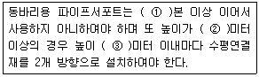
- ①3, ②3.5, ③2
- ①2, ②3.5, ③2
- ①3, ②3.5, ③3
- ①2, ②3.5, ③3
(정답률: 62%)
112. 타워크레인을 와이어로프로 지지하는 경우에 준수해야 할 사항으로 옳지 않은 것은?
- 와이어로프를 고정하기 위한 전용 지지프레임을 사용 할 것
- 와이어로프 설치각도는 수평면에서 60° 이상으로 할 것
- 와이어로프의 고정부위는 충분한 강도와 장력을 갖도록 설치할 것
- 와이어로프가 가공전선에 접근하지 아니하도록 할 것
(정답률: 74%)
113. 다음 중 체인(chain)의 폐기대상이 아닌 것은?
- 균열, 흠이 있는 것
- 뒤틀림 등 변형이 현저한 것
- 전장이 원래 길이의 5%를 초과하여 늘어난 것
- 링(Ring)의 단면지름의 감소가 원래지름의 5% 마모된 것
(정답률: 55%)
114. 산업안전보건법상 화물취급작업 시 관리감독자의 유해⋅위험방지업무와 가장 거리가 먼 것은?
- 관계근로자 외의 자의 출입을 금지시키는 일
- 기구 및 공구를 점검하고 불량품을 제거하는 일
- 대피방법을 미리 교육하는 일
- 작업방법 및 순서를 결정하고 작업을 지휘하는 일
(정답률: 60%)
115. 산업안전기준에 관한 규칙에서 규정한 붕괴위험을 방지하기 위한 굴착면의 기울기 기준으로 옳지 않은 것은?(2021년 11월 19일 개정된 규정 적용됨)
- 건지 - 1:1~1:1.5
- 풍화암 - 1:1.0
- 연암 - 1:1.0
- 경암 - 1:0.5
(정답률: 66%)
116. 다음 중 사면지반 개량공법에 속하지 않는 것은?
- 전기 화학적 공법
- 석회 안정처리 공법
- 이온 교환 공법
- 옹벽 공법
(정답률: 40%)
117. 건설현장 토사붕괴 원인으로 옳지 않은 것은?
- 지하수위의 증가
- 내부마찰각의 증가
- 점착력의 감소
- 차량에 의한 진동하중 증가
(정답률: 56%)
118. 다음 중 안전난간의 구조 및 설치요건으로 옳지 않은 것은?
- 상부난간대는 바닥면⋅발판 또는 경사로의 표면으로 부터 90cm 이상 120cm 이하의 높이를 유지할 것
- 상부난간대와 중간난간대는 난간길이 전체에 걸쳐 바닥면과 평행을 유지할 것
- 안전난간은 임의의 점에서 임의의 방향으로 움직이는 최소 80kg 이상의 하중에 견딜 수 있어야할 것
- 발끝막이판은 바닥면등으로부터 10cm 이상의 높이를 유지할 것
(정답률: 73%)
119. 히빙(heaving)현상에 대한 안전대책이 아닌 것은?
- 굴착배면의 상재하중 등 토압을 경감시킨다.
- 시트파일 등의 근입심도를 검토한다.
- 굴착저면에 토사 등 인공중력을 감소시킨다.
- 굴착주변을 웰 포인트 공법과 병행한다.
(정답률: 49%)
120. 토질시험(soil test)방법 중 전단시험에 해당하지 않는 것은?
- 일면 전단 시험
- 베인테스트
- 일축 압축 시험
- 투수시험
(정답률: 47%)